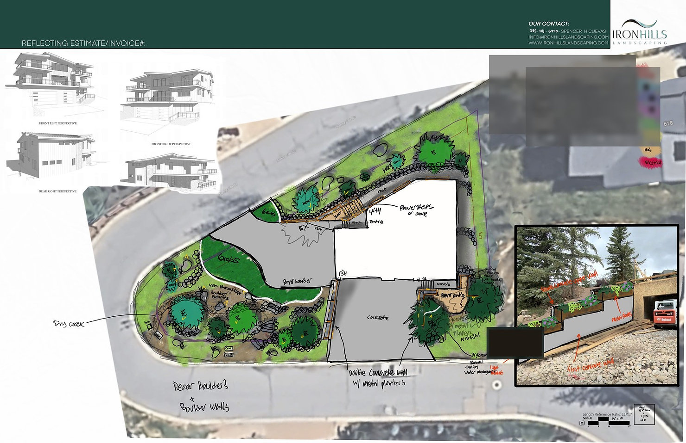
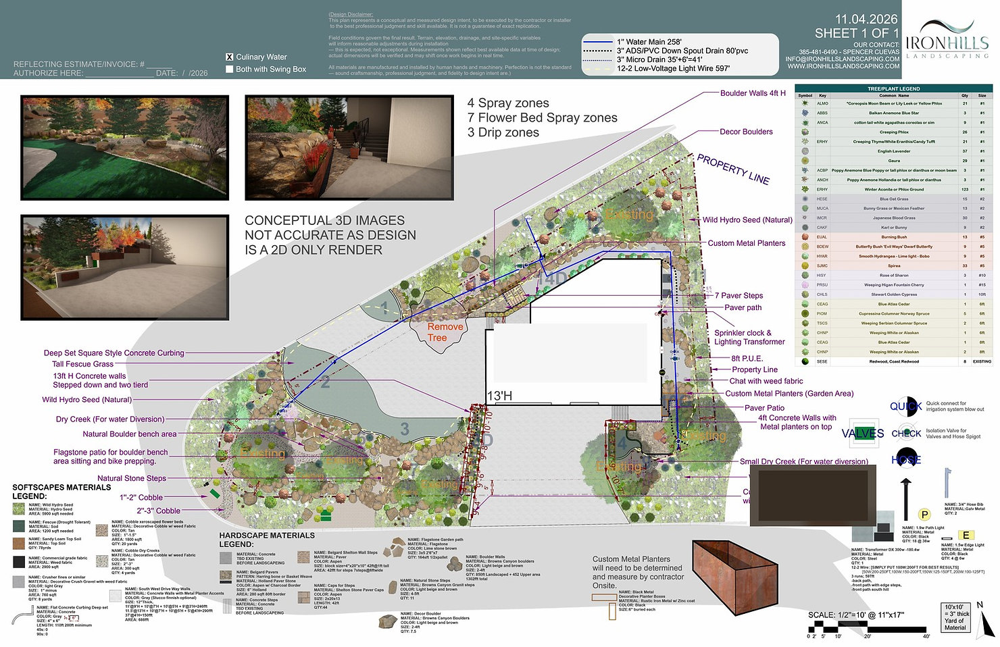

Landscape Design Cost in Utah County
Updated: Nov 13
If you've started pricing out a new backyard, you've probably hit this question early: do I really need to pay for a design, or can I just call a contractor and start building?
It comes up all the time online. "Is $2k too much to pay for a landscape design plan?" "$2,000 for a rendering?" "I paid for a design, then the bid came in way over budget. What went wrong?"
So here's the honest version: what landscape design costs at Ironhills, what you actually get for the money, the difference between a sketch, a finished 2D plan, and a 3D render, and when a design is worth it versus when you can skip it.

What does a landscape design cost at Ironhills?
Our design fees vary, typically about $0.12 to $0.30+ per square foot. The number depends on the size of the area, slope, features, complexity, and whether you want a 2D plan or a full 3D package.
That's a wide range, so here's what moves it:
Size of the area. A front-yard refresh and a full backyard are very different amounts of drawing.
Complexity. Slopes, retaining walls, drainage, multiple patio levels, lighting, and outdoor kitchens all add design time.
2D vs 3D. 3D renderings take more time to build than a top-down plan.
Extra pages. Additional design or phase pages are $350 each, or $115/hr, and they're complimentary if Ironhills is doing the install.
Drone video. Optional, and priced separately from the design package.
Every package starts with a site consultation, survey, and measurements. We use drone imaging when the site needs it. You'll get an exact number before you sign anything.
What do you actually get for the money?
This is where a lot of the "is it worth it?" frustration comes from. People pay for a "design" and get a rough sketch. Here's exactly what an Ironhills design package includes. It's usually 1 to 3 pages plus a video link:
A site plan drawn to scale showing heights, measurements, concepts, materials, lighting, utilities, and irrigation.
A plant and tree concept list.
3D imagery of the key features (with 3D packages).
A YouTube walkthrough video so you can see the plan, share it with your spouse, and come back to it later.
One to two collaborative design meetings.
One to two rounds of revisions, one of which is a live collaborative session of at least an hour, so you're not stuck trading emails. Extra revisions after approval are $115/hr.
The first draft is typically ready 1 to 2 weeks after the site visit and deposit.
Whoever you hire, ask for a list like that in writing. If a designer can't tell you what the deliverables are, you can't judge whether the price is fair.

2D vs 3D landscape design: which one do you need?
Think of it this way: 2D shows the layout. 3D shows the experience.
A 2D plan is the top-down, measured map of your yard. It shows where the patio goes, how big it is, where beds, walls, lighting, and sprinklers run, and what materials go where. For straightforward projects, such as a planting refresh, a simple patio, or new sod and sprinklers, a good 2D plan is often all you need.
A 3D design takes that same plan and lets you see it the way you'll actually stand in it. That matters when:
Your yard has elevation changes, like a sloped Lehi or Saratoga Springs lot that needs retaining walls. Height is hard to picture on a flat page.
You're combining several features, like a patio, pergola, fire pit, and walls, and you need to see how they fit together.
More than one person has to agree. A rendering ends a lot of "that's not what I pictured" conversations before they happen.
You're deciding between materials or colors and want to see them side by side.
Not sure? Ask during the consultation, and we'll tell you honestly if 2D is enough.
3D: 3D renders from recent Ironhills design projects let you see the space before it's built.
3D design (left). ACTUAL RESULT: built by Ironhills (right).
3D design (left). ACTUAL RESULT: built by Ironhills (right).
Want to see what a design would cost for your yard? Fill out our design intake form, or schedule a free consultation.
When is a landscape design worth it?
For anything with structure to it, a design is usually worth it. Here's why.
It catches mistakes on paper instead of in concrete. Moving a line on a drawing is free. Tearing out a patio that ended up too small, a wall in the wrong spot, or a walkway where the snowmelt collects is not.
It keeps bids honest. One of the most common complaints online is that several contractors quoted wildly different prices for the same yard. Usually they weren't pricing the same yard. Each one imagined a slightly different project. A measured plan gives everyone the same scope.
It lets you phase the work. A full plan lets you put in the patio and sprinklers this year and the pergola later, without boxing yourself in.
It can be built by real people. Ironhills designs come from 10+ years of hands-on landscape construction and design coursework at BYU and UVU, so plans are drawn with real installation in mind — grading, drainage, and equipment access, not just how it looks.
When can you skip a design?
Honestly, sometimes you can. If you're swapping a few shrubs, adding a small bed, or doing a simple project you already have a clear picture of, a formal design package is probably overkill. Talk to us about the project directly and we'll tell you if a design would actually help.
"I paid for a design, and the bid came in way over budget." How do you avoid that?
This one stings, and it happens. A designer draws the dream yard without anyone talking about money, and then the install bids come back at double what you hoped to spend.
A few ways to prevent it:
Share your real budget at the first meeting. It's not a negotiating tactic. It's the most useful design input you can give.
Work with someone who builds. A design-build team knows what things cost to install and can design to your number.
Plan in phases. If the full vision is bigger than this year's budget, design it all and build it in stages.
Keep in mind that a design is a conceptual plan, not a bid. Any cost guidance in it is an estimate until you get a written construction contract.
How does payment work?
For design projects of $5,000 or less, the full fee is paid at signing. For projects above $5,000, it's 75% at signing and 25% when we deliver the final design.
Do you get the design fee back if Ironhills builds it?
Partly, yes. If you hire Ironhills to install your design — and you sign the install agreement within 15 days of final design delivery or 30 days after signing the design agreement, whichever is later — we credit part of your design fee toward the installation, typically up to $2,000 depending on the design fee:
Design fee | Install credit |
$1,500–$1,700 | $300 |
$2,100–$3,000 | $500 |
$3,500–$4,000 | $700 |
$4,500–$5,000 | $1,000 |
$5,500–$7,000 | $1,500 |
$7,000+ | $2,000 |
Install clients also get unlimited reasonable revisions with 3D renderings for phasing or concept changes, plus complimentary extra design or phase pages.
You're also free to have someone else build it. In that case the design fee stays as paid, and you can use the design for your property.
Frequently asked questions
Is $2,000 too much for a landscape design? It depends on what's included and how big and complex the yard is. Compare deliverables, not just price. A to-scale site plan, plant list, 3D views, a walkthrough video, meetings, and revisions are worth more than a single rendering.
How long does a landscape design take? The first draft is typically ready 1 to 2 weeks after the site visit and deposit. From there, timing depends on how quickly decisions get made in the revision meetings.
Is a landscape design the same as an engineered plan? No. Our designs are conceptual. They aren't engineered, stamped, or surveyed. Permits and HOA approval aren't included — we provide HOA submittal material, and you submit it. Retaining walls over 4 feet, structures, and drainage need a licensed engineer. Check permit rules with your city before you build.
Do I need utility locates before my project? Yes. Before anyone digs, call Blue Stakes of Utah at 811 to have underground utilities marked.
Can I use my design with another contractor? Yes. Once it's paid in full, you can use the design for your property with any installer.
Ready to see what your yard could be?
If you're weighing whether a design makes sense for your project, the easiest next step is a conversation. Fill out our design intake form, or schedule a free consultation — or call us at 801-515-2051. We'll help you figure out whether 2D, 3D, or no formal design at all is the right fit, with no pressure either way.
Recent Posts

If you live in Lehi, there's a good chance your yard isn't perfectly flat. Newer neighborhoods near Traverse Mountain, homes along the foothills, and lots that step down toward the street all share th